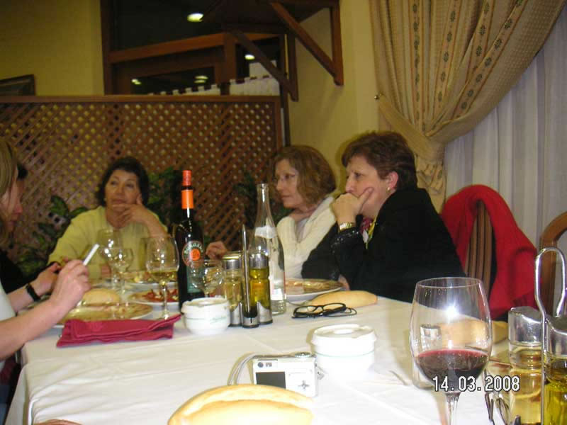

Encuentro en SantoñaAnterior | Inicio | Siguiente |
|
 Las que dicen ser, que ya hemos aclarado que parecen serlo, incluyendo también en primer término de la izquierda a media Ana, ellas, ala, a su guerra. Se comieron un plato de anchoas con Albariño que mejor callarse... |